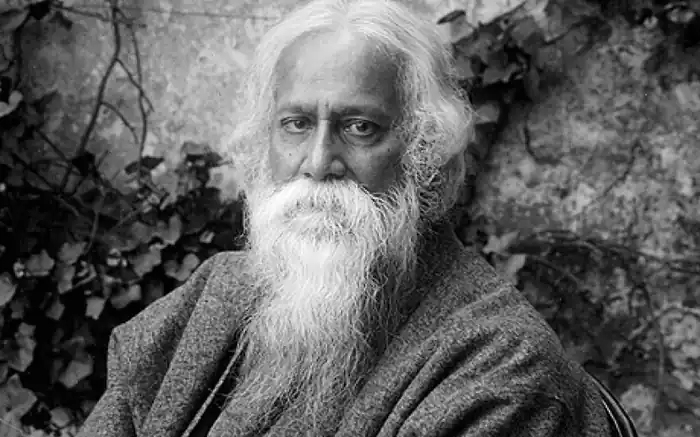
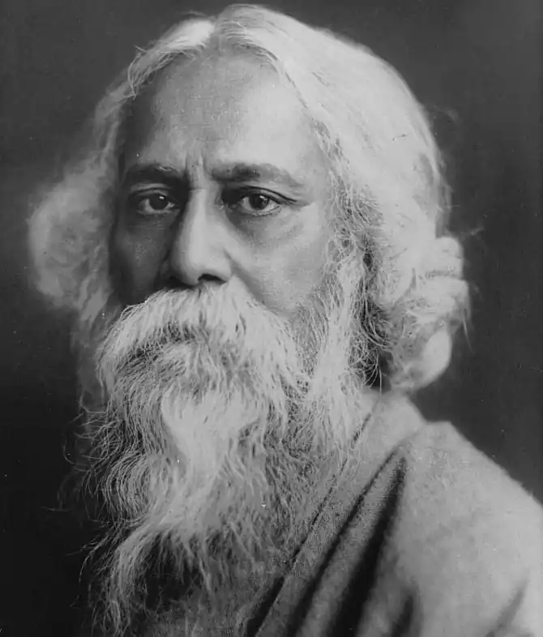
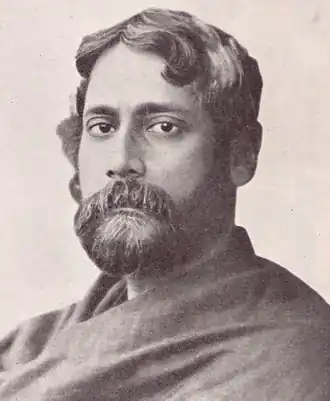

Рабіндранат Тагор (7 травня 1861 — 7 серпня 1941). — бенгальський і індійський письменник, поет, драматург, композитор. Нобелівський лауреат (1913). Автор гімнів Індії і Бангладеш.
Тагор народився у відомій аристократичній сім'ї, яка дала Індії чимало видатних діячів культури й атмосфера де сприяли ранньому розвитку таланту дитини, її здібностей до літератури, формуванню естетичних смаків. Особливо це стосується брата Тагора — письменника та музиканта Джотіріндронатха Тагора та його дружини Кадомборі Дебі. Рабіндранат Тагор почав віршувати у вісім років. Тагор навчався у престижних навчальних закладах: спочатку в Східній семінарії у Калькутті, потім — у Бенгальській академії, де він вивчав мистецтво, історію та культуру Індії. У 1878 р. батько відправив Тагора на навчання до Англії, там він займався літературою та музикою у Лондонському університеті. Проте вже через півтора року Тагор покинув навчання і повернувся додому. У 1883 p. Тагор одружився. Вірніше, виконуючи волю батька і дотримуючись кастових звичаїв, жінки родини Тагорів підшукали йому наречену — нічим непримітну і малописьменну селянську дівчину Бхаватаріні (після заміжжя — Мріноліні), батько якої, що виявилося, працював в одному із маєтків Тагора. У 1884-1911 pp. Тагор — секретар релігійно-реформаторського товариства "Аді Брахма Самадж". У 1886 р. подружжя Тагорів народилася перша дитина, дівчина Мадхурілота, а через два роки — син Ротхі. На початку 1889 p. Тагор перевіз свою сім'ю в Шолапур (місто на південному заході Індії), де працював суддею його брат. Літературний доробок Рабіндраната Тагора великою мірою відзначався через призму його поетичної творчості. Однак, він також писав романи, есе, оповідання, історичні та подорожні нотатки, драми, і тисячі пісень. З прози Тагора, його короткі історіі, отримають найвищу оцінку, йому вдалося поєднати в своїх творах особливості бенгальського світосприйняття та популяризувати свою рідну бенгальську мову. Його роботи часто відрізнялися ритмічністю, оптимістичністю і ліричниим характером. Але найголовніша сутність більшості його творів — це змалювання життя простих людей. Творчість Тагора відіграла вирішальну роль у становленні сучасної бенгальської мови, він збагатив бенгальську поезію новими формами і віршованими розмірами, заклав основи жанру оповідання і розвинув романний жанр. Він справив вплив на всі літератури Індії. Тагору належить кілька тисяч пісень у народному стилі; його вірш "Душа народу" (1911) став національним гімном Індії, а пісня "Моя золота Бенгалія" — тепер національний гімн Республіки Бангладеш. Значний внесок Тагора і в малярство, яким він почав займатися у 1928 р. Дві тисячі рисунків і картин, виконаних здебільшого в умовній манері, значно розширюють уявлення про духовний світ поета. Тагор помер 7 серпня 1941 р. після важкої ниркової хвороби й операції. Українською мовою твори Тагора переклали М. Бажан, В. Мисик, Д. Паламарчук. Тагор — почесний доктор Оксфордського університету, удостоєний почесного ступеня чотирьох університетів Індії. Тагор отримав Нобелівську премію з літератури в 1913 р. "за глибоко відчуті, оригінальні і прекрасні вірші, в яких з винятковою майстерністю відбилося його поетичне мислення, що стало, за його власними словами, частиною літератури Заходу". У 1915 р. Тагор отримав лицарське звання, однак через чотири роки, після розстрілу британськими військами мирної демонстрації в Амрітсарі, від нього відмовився. Протягом подальших тридцяти років поет здійснює поїздки до Європи, в США, до Південної Америки і на Близький Схід. Його картини (Тагор почав займатися живописом у віці 68 років) виставлялися в Мюнхені, Нью-Йорку, Парижі, Москві, в інших містах світу.